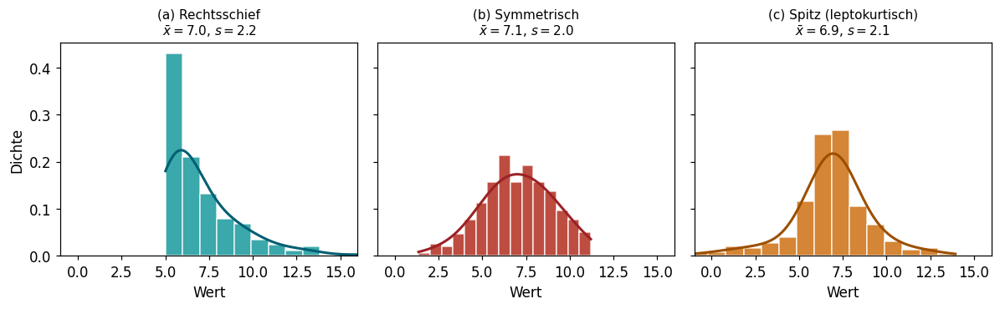
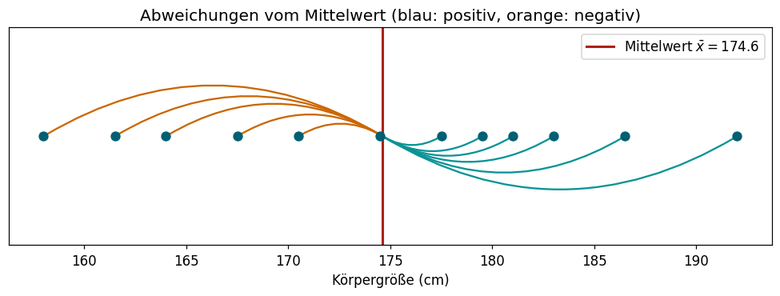
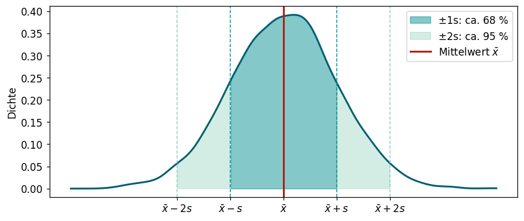
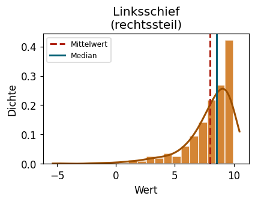
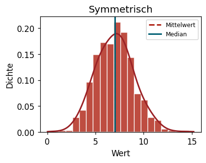
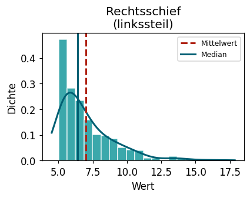
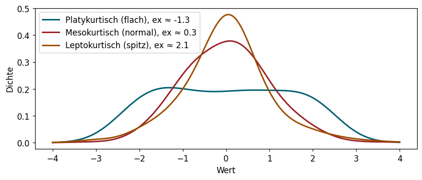

1.5 Kennzahlen: Streuung, Schiefe & Wölbung
Lernziele
Am Ende dieses Unterkapitels kannst du:
- verschiedene Streuungsmaße (Spannweite, IQR, Varianz, Standardabweichung) berechnen und interpretieren.
- erklären, was der Unterschied zwischen der korrigierten und unkorrigierten Varianz ist.
- Häufigkeitsverteilungen auf Schiefe und Wölbung untersuchen.
- geeignete Python-Funktionen für alle behandelten Kennzahlen anwenden.
Einführung
In Kapitel 1.4 haben wir Lagemaße kennengelernt, die beschreiben, wo sich die Mitte einer Stichprobe befindet. Zwei Stichproben können aber denselben Mittelwert haben und trotzdem völlig unterschiedlich aussehen:
Nur mit Lagemaßen können wir diese Unterschiede nicht erfassen. Wir brauchen zusätzlich Maße für:
- Streuung: Wie weit liegen die Werte auseinander?
- Schiefe: Ist die Verteilung symmetrisch?
- Wölbung: Ist die Verteilung spitz oder flach?
Streuungsmaße
Spannweite und Interquartilsabstand
Die einfachsten Streuungsmaße kennen wir bereits aus dem Boxplot (Kapitel 1.4):
Definition 1 (Spannweite)
Die Spannweite einer geordneten Stichprobe x_{(1)} \le \cdots \le x_{(n)} ist der Abstand zwischen dem größten und kleinsten Wert:
\tilde{q}_0 = x_{(n)} - x_{(1)} = \text{Maximum} - \text{Minimum}
Definition 2 (Interquartilsabstand (IQR))
Der Interquartilsabstand (engl. interquartile range, IQR) ist der Abstand zwischen dem dritten und ersten Quartil:
\text{IQR} = Q_3 - Q_1 = \tilde{x}_{0{,}75} - \tilde{x}_{0{,}25}
Er gibt an, wie breit der Bereich ist, in dem die mittleren 50 % der Daten liegen.
Beispiel 1 (Körpergröße bei 12 Personen)
Sortierte Stichprobe: 158,0 – 161,5 – 164,0 – 167,5 – 170,5 – 174,5 – 177,5 – 179,5 – 181,0 – 183,0 – 186,5 – 192,0
Aus den Berechnungen in Kapitel 1.4: - Spannweite: 192{,}0 - 158{,}0 = 34{,}0 cm - IQR: Q_3 - Q_1 = 182{,}0 - 165{,}75 = 16{,}25 cm
Die mittleren 50 % der Beobachtungen liegen also maximal 16,25 cm auseinander.
VorsichtSpannweite ist anfällig für Ausreißer
Ein einziger extremer Wert (z.B. ein Messpfehler) kann die Spannweite extrem vergrößern, selbst wenn alle anderen Werte eng beieinander liegen. Der IQR ist deutlich robuster, da er nur die mittleren 50 % der Daten berücksichtigt.
Varianz und Standardabweichung
Die wichtigsten Streuungsmaße in der Statistik sind die empirische Varianz und die empirische Standardabweichung. Sie messen die durchschnittliche quadratische Abweichung der Beobachtungen vom arithmetischen Mittel.
Definition 3 (Empirische Varianz und Standardabweichung)
Sei (x_1, \dots, x_n) eine Stichprobe eines kardinal skalierten Merkmals mit arithmetischem Mittel \bar{x}.
Unkorrigierte Varianz (Vorfaktor \frac{1}{n}): \tilde{s}^2 = \dfrac{1}{n} \sum_{i=1}^n (x_i - \bar{x})^2
Korrigierte Varianz (Vorfaktor \frac{1}{n-1}): s^2 = \dfrac{1}{n-1} \sum_{i=1}^n (x_i - \bar{x})^2
Die Standardabweichung ist die Wurzel der Varianz: s = \sqrt{s^2} bzw. \tilde{s} = \sqrt{\tilde{s}^2}.
TippWarum zwei Versionen?
Der Unterschied ist nur der Vorfaktor: s^2 = \frac{n}{n-1} \cdot \tilde{s}^2.
- Die korrigierte Version (\frac{1}{n-1}) ist in der Statistik die Standardversion – Python und fast alle Software verwenden sie standardmäßig. Sie liefert bei kleinen Stichproben etwas genauere Schätzungen (Näheres in Kapitel 2: Schätztheorie).
- Die unkorrigierte Version (\frac{1}{n}) ist die eigentliche „mittlere quadratische Abweichung”.
- Bei großen Stichproben ist der Unterschied vernachlässigbar: \frac{n}{n-1} \approx 1 für großes n.
Beispiel 2 (Berechnung der Varianz – Körpergröße bei 12 Personen)
Stichprobe: 170,5 – 183,0 – 174,5 – 158,0 – 167,5 – 179,5 – 192,0 – 177,5 – 186,5 – 161,5 – 181,0 – 164,0
Bekannt: \bar{x} = 174{,}625 cm
Für jeden Wert berechnen wir (x_i - \bar{x})^2:
| i | x_i | x_i - \bar{x} | (x_i - \bar{x})^2 |
|---|---|---|---|
| 1 | 170,5 | −4,125 | 17,016 |
| 2 | 183,0 | +8,375 | 70,141 |
| 3 | 174,5 | −0,125 | 0,016 |
| 4 | 158,0 | −16,625 | 276,391 |
| 5 | 167,5 | −7,125 | 50,766 |
| 6 | 179,5 | +4,875 | 23,766 |
| 7 | 192,0 | +17,375 | 301,891 |
| 8 | 177,5 | +2,875 | 8,266 |
| 9 | 186,5 | +11,875 | 141,016 |
| 10 | 161,5 | −13,125 | 172,266 |
| 11 | 181,0 | +6,375 | 40,641 |
| 12 | 164,0 | −10,625 | 112,891 |
| \sum | 2095,5 | 0 | 1215,07 |
Die Summe der Abweichungen ist wie erwartet 0 (Kontrollrechnung!).
s^2 = \dfrac{1215{,}07}{12-1} \approx 110{,}46 \text{ cm}^2 \qquad s \approx 10{,}51 \text{ cm}
\tilde{s}^2 = \dfrac{1215{,}07}{12} \approx 101{,}26 \text{ cm}^2 \qquad \tilde{s} \approx 10{,}06 \text{ cm}

Rechenhinweis: Effiziente Berechnung
Um die Varianz zu berechnen, geht man Schritt für Schritt vor:
- \bar{x} berechnen
- Für jeden Wert x_i die Abweichung (x_i - \bar{x}) berechnen
- Die Abweichungen quadrieren: (x_i - \bar{x})^2
- Summe bilden: \sum (x_i - \bar{x})^2
- Durch n-1 (korrigiert) oder n (unkorrigiert) teilen
Kontrolle: \sum (x_i - \bar{x}) = 0 muss immer gelten!
Interpretation der Standardabweichung
Die Varianz ist in quadratischen Einheiten (z.B. cm²) – sie ist schwer direkt zu interpretieren. Die Standardabweichung hingegen hat dieselbe Einheit wie die Daten (z.B. cm) und lässt sich gut interpretieren:
Die Standardabweichung gibt die typische Abweichung eines einzelnen Werts vom Mittelwert an.
Wenn die Daten annähernd glockenförmig (normalverteilt) verteilt sind, gilt die 68-95-Regel:

Aufgabe 1 (Pinguine: Varianz und Standardabweichung)
Berechne Varianz und Standardabweichung der Flossenlänge (flipper_length_mm) getrennt nach Insel (island). Auf welcher Insel ist die Flossenlänge am gleichmäßigsten?
Python: Varianz und Standardabweichung
# Korrigierte Varianz (n-1) – Standard in pandas
df['spalte'].var()
# Korrigierte Standardabweichung (n-1)
df['spalte'].std()
# Mit NumPy – ACHTUNG: Standardmäßig unkorrigiert (n)!
import numpy as np
np.var(daten) # unkorrigiert
np.var(daten, ddof=1) # korrigiert (wie pandas)
np.std(daten, ddof=1) # korrigierte Standardabweichung
# Vollständige Zusammenfassung inkl. std
df['spalte'].describe()Schiefe
Lagemaße und Streuungsmaße allein reichen nicht aus, um eine Verteilung vollständig zu beschreiben. Zwei Verteilungen können denselben Mittelwert und dieselbe Standardabweichung haben, aber unterschiedlich schief sein.
Symmetrie und Asymmetrie
Eine Häufigkeitsverteilung heißt symmetrisch, wenn sie um ihren Mittelwert gespiegelt werden kann – d.h. die linke und rechte Seite des Histogramms sehen gleich aus.
Ist eine Verteilung nicht symmetrisch, sprechen wir von einer schiefen Verteilung:



TippSchiefe erkennen: Mittelwert vs. Median
| Verteilung | Beziehung | Typisches Beispiel |
|---|---|---|
| Linksschief (rechtssteil) | \bar{x} < \tilde{x}_{0{,}5} | Prüfungsnoten, die die meisten gut bestehen |
| Symmetrisch | \bar{x} \approx \tilde{x}_{0{,}5} | Körpergröße, Messabweichungen |
| Rechtsschief (linkssteil) | \bar{x} > \tilde{x}_{0{,}5} | Einkommen, Wartezeiten, Preise |
Rechtsschiefe Verteilungen erkennt man oft an einem langen „Schweif” nach rechts.
Momentenkoeffizient der Schiefe
Um die Schiefe numerisch zu messen, verwenden wir den Momentenkoeffizienten der Schiefe sk:
Definition 4 (Momentenkoeffizient der Schiefe)
sk = \dfrac{1}{n} \sum_{i=1}^n \left(\dfrac{x_i - \bar{x}}{s}\right)^3
- sk > 0: rechtsschiefe Verteilung
- sk = 0: symmetrische Verteilung
- sk < 0: linksschiefe Verteilung
Intuition hinter der Formel
Die Abweichungen (x_i - \bar{x}) werden durch s standardisiert (einheitenlos gemacht) und dann hoch 3 genommen. Da bei positiver Abweichung das Vorzeichen erhalten bleibt (positiv hoch 3 = positiv) und bei negativer Abweichung das Vorzeichen erhalten bleibt (negativ hoch 3 = negativ), zeigt das Vorzeichen von sk die Richtung der Schiefe an.
Beispiel 3 (Körpergröße bei 12 Personen)
Bekannt: \bar{x} = 174{,}625 cm, s = 10{,}51 cm
Mit der Tabelle aus dem Varianz-Beispiel ergibt sich: \sum \left(\frac{x_i - \bar{x}}{s}\right)^3 \approx -0{,}50
sk = \dfrac{-0{,}50}{12} \approx -0{,}042
Der Wert ist sehr nahe an 0 → die Verteilung ist annähernd symmetrisch.
Aufgabe 2 (Pinguine: Schiefe des Körpergewichts)
Berechne den Momentenkoeffizienten der Schiefe für das Körpergewicht (body_mass_g) der Pinguine. Ist die Verteilung rechts- oder linksschief? Vergleiche Mittelwert und Median als Plausibilitätsprüfung.
Python: Schiefe berechnen
from scipy import stats
# Schiefe einer Datenreihe (entspricht dem Momentenkoeffizienten sk)
stats.skew(daten)
# Alternativ: pandas (nur Stichproben-Version)
df['spalte'].skew()Wölbung
Die Wölbung (auch Kurtosis) beschreibt die Steilheit einer unimodalen, symmetrischen Verteilung. Eine hohe Wölbung bedeutet: Die Werte häufen sich stark in der Mitte – mit einem schmalen, spitzen Gipfel und langen, schweren Rändern (Ausreißern).
Definition 5 (Momentenkoeffizient der Wölbung)
w = \dfrac{1}{n} \sum_{i=1}^n \left(\dfrac{x_i - \bar{x}}{s}\right)^4
Der Vergleichswert ist die Normalverteilung mit w = 3. Daher berechnet man häufig den Exzess (Überschuss):
ex = w - 3
- ex > 0: spitz (leptokurtisch)
- ex = 0: normal (mesokurtisch)
- ex < 0: flach (platykurtisch)

Beispiel 4 (Körpergröße bei 12 Personen)
Analoges Vorgehen wie bei der Schiefe, aber mit der 4. Potenz. Es ergibt sich: \sum \left(\frac{x_i - \bar{x}}{s}\right)^4 \approx 19{,}67
w = \dfrac{19{,}67}{12} \approx 1{,}64 \qquad ex = 1{,}64 - 3 = -1{,}36
Ein negativer Exzess – die Verteilung ist flacher (platykurtisch) als eine Normalverteilung.
Aufgabe 3 (Pinguine: Wölbung der Flossenlänge)
Berechne die Wölbung und den Exzess der Flossenlänge (flipper_length_mm). Ist die Verteilung spitzer oder flacher als eine Normalverteilung?
Python: Wölbung berechnen
from scipy import stats
# ACHTUNG: scipy.stats.kurtosis() gibt den EXZESS (= w - 3) zurück, nicht w!
exzess = stats.kurtosis(daten) # ex = w - 3
woelbung = exzess + 3 # w
# pandas .kurt() gibt ebenfalls den Exzess
df['spalte'].kurt()Zusammenfassung
TippAlle Kennzahlen im Überblick
| Maßzahl | Formel / Begriff | Python |
|---|---|---|
| Spannweite | x_{(n)} - x_{(1)} | max() - min() |
| IQR | Q_3 - Q_1 | .quantile(0.75) - .quantile(0.25) |
| Varianz (korrig.) | \frac{1}{n-1}\sum(x_i-\bar{x})^2 | .var() |
| Standardabweichung | \sqrt{s^2} | .std() |
| Schiefe sk | \frac{1}{n}\sum\left(\frac{x_i-\bar{x}}{s}\right)^3 | stats.skew() |
| Wölbung w | \frac{1}{n}\sum\left(\frac{x_i-\bar{x}}{s}\right)^4 | stats.kurtosis() + 3 |
| Exzess ex | w - 3 | stats.kurtosis() |
Mit df['spalte'].describe() erhält man auf einen Blick: n, Mittelwert, Standardabweichung, Minimum, Q_1, Median, Q_3, Maximum.
Wissenstest
---
primaryColor: '#0a9396'
shuffleQuestions: false
shuffleAnswers: true
---
### Was misst die Standardabweichung?
1. [ ] Den Abstand zwischen Minimum und Maximum
1. [x] Die typische Abweichung der Beobachtungen vom Mittelwert
> Genau! Die Standardabweichung hat dieselbe Einheit wie die Daten und gibt an, wie weit die Werte durchschnittlich vom Mittelwert abweichen.
1. [ ] Den Median der quadratischen Abweichungen
1. [ ] Den Abstand zwischen Q1 und Q3
### Eine Stichprobe hat Varianz $s^2 = 25$ cm². Wie groß ist die Standardabweichung?
1. [ ] 25 cm
1. [ ] 625 cm
1. [x] 5 cm
> Richtig! $s = \sqrt{s^2} = \sqrt{25} = 5$ cm.
1. [ ] 12,5 cm
### Welche der folgenden Streuungsmaße ist am robustesten gegenüber Ausreißern?
1. [ ] Spannweite
1. [ ] Varianz
1. [x] Interquartilsabstand (IQR)
> Korrekt! Der IQR basiert nur auf den mittleren 50 % der Daten und wird von extremen Werten kaum beeinflusst.
1. [ ] Standardabweichung
### Du siehst: Mittelwert = 45.000 €, Median = 32.000 €. Was schließt du?
1. [ ] Die Daten sind linksschief
1. [x] Die Daten sind rechtsschief – wenige hohe Gehälter ziehen den Mittelwert nach oben
> Richtig! Bei rechtsschiefen Verteilungen gilt $\bar{x} > \tilde{x}_{0,5}$. Typisch für Gehälter.
1. [ ] Mittelwert und Median sollten immer gleich sein
1. [ ] Die Daten sind symmetrisch
### Was sagt ein negativer Momentenkoeffizient der Schiefe ($sk < 0$)?
1. [ ] Die Verteilung ist rechtsschief
1. [ ] Die Verteilung ist symmetrisch
1. [x] Die Verteilung ist linksschief – die meisten Werte liegen rechts, mit einem langen Schweif nach links
> Richtig! Bei linksschiefe gilt $sk < 0$ und $\bar{x} < \tilde{x}_{0,5}$.
1. [ ] Die Varianz ist negativ – das kann nicht sein
### Was bedeutet ein Exzess $ex > 0$?
1. [x] Die Verteilung ist leptokurtisch – spitzer als eine Normalverteilung
> Richtig! Positiver Exzess = leptokurtisch (griech. leptos = schlank/spitz). Die Werte häufen sich stark in der Mitte.
1. [ ] Die Verteilung ist platykurtisch – flacher als eine Normalverteilung
1. [ ] Die Wölbung ist größer als 0
1. [ ] Die Wölbung ist kleiner als 3
### Die Funktion `stats.kurtosis()` aus scipy gibt welchen Wert zurück?
1. [ ] Den Wölbungskoeffizienten $w$
1. [ ] Den Wölbungskoeffizienten $w$ minus 1
1. [x] Den Exzess $ex = w - 3$ (Vergleich zur Normalverteilung)
> Wichtig zu wissen! `scipy.stats.kurtosis()` gibt standardmäßig den Exzess (Überschuss gegenüber der Normalverteilung) zurück. Um $w$ zu erhalten, muss man 3 addieren.
1. [ ] Den Momentenkoeffizienten der Schiefe